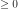
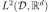
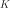
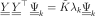
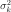
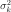

KarhunenLoeveSVDAlgorithm¶
(Source code, png, hires.png, pdf)
{kind=link}
{kind=link}
-
class
KarhunenLoeveSVDAlgorithm(*args)¶ Computation of Karhunen-Loeve decomposition using SVD approximation.
- Available constructors:
KarhunenLoeveSVDAlgorithm(sample, s, centeredFlag)
KarhunenLoeveSVDAlgorithm(sample, verticesWeights, s, centeredFlag)
KarhunenLoeveSVDAlgorithm(sample, verticesWeights, sampleWeights, s, centeredFlag)
Parameters: sample :
ProcessSampleThe sample containing the observations.
verticesWeights : sequence of float
The weights associated to the vertices of the mesh defining the sample.
sampleWeights : sequence of float
The weights associated to the fields of the sample.
s : float, 
The threshold used to select the most significant eigenmodes, defined in
KarhunenLoeveAlgorithm.centeredFlag : logical
Flag to tell if the sample is drawn according to a centered process or if it has to be centered using the empirical mean. The default value is False.
Notes
The Karhunen-Loeve SVD algorithm solves the Fredholm problem associated to the covariance function
 : see
: see KarhunenLoeveAlgorithmto get the notations.The SVD approach is a particular case of the quadrature approach (see
KarhunenLoeveQuadratureAlgorithm) where we consider the functional basis of  defined on by:
by:The SVD approach is used when the covariance function is not explicitely known but only through  fields of the associated stochastic process
 : .
: .It consists in :
- approximating
 by its empirical estimator where and
by its empirical estimator where and  if the process is centered and
if the process is centered and  otherwise;
otherwise; - taking the vertices of the mesh of as the quadrature points.
We suppose now that , and we note .
As the matrix is invertible, the Galerkin and collocation approaches are equivalent and both lead to the following singular value problem for :
(1)¶
The SVD decomposition of writes:
where we have , , such that :
- ,
- ,
- .
Then the columns of
 are the eigenvectors of associated to the eigenvalues .
are the eigenvectors of associated to the eigenvalues .We deduce the modes and eigenvalues of the Fredholm problem for :
We have:
Examples
Create a Karhunen-Loeve SVD algorithm:
>>> import openturns as ot >>> mesh = ot.IntervalMesher([10]*2).build(ot.Interval([-1.0]*2, [1.0]*2)) >>> s = 0.01 >>> model = ot.AbsoluteExponential([1.0]*2) >>> sample = ot.GaussianProcess(model, mesh).getSample(8) >>> algorithm = ot.KarhunenLoeveSVDAlgorithm(sample, s)
Run it!
>>> algorithm.run() >>> result = algorithm.getResult()
Methods
getClassName()Accessor to the object’s name. getCovarianceModel()Accessor to the covariance model. getId()Accessor to the object’s id. getName()Accessor to the object’s name. getResult()Get the result structure. getSample()Accessor to the process sample. getSampleWeights()Accessor to the weights of the sample. getShadowedId()Accessor to the object’s shadowed id. getThreshold()Accessor to the threshold used to select the most significant eigenmodes. getVerticesWeights()Accessor to the weights of the vertices. getVisibility()Accessor to the object’s visibility state. hasName()Test if the object is named. hasVisibleName()Test if the object has a distinguishable name. run()Computation of the eigenvalues and eigenfunctions values at nodes. setCovarianceModel(covariance)Accessor to the covariance model. setName(name)Accessor to the object’s name. setShadowedId(id)Accessor to the object’s shadowed id. setThreshold(threshold)Accessor to the limit ratio on eigenvalues. setVisibility(visible)Accessor to the object’s visibility state. -
__init__(*args)¶ x.__init__(…) initializes x; see help(type(x)) for signature
-
getClassName()¶ Accessor to the object’s name.
Returns: class_name : str
The object class name (object.__class__.__name__).
-
getCovarianceModel()¶ Accessor to the covariance model.
Returns: covModel :
CovarianceModelThe covariance model.
-
getId()¶ Accessor to the object’s id.
Returns: id : int
Internal unique identifier.
-
getName()¶ Accessor to the object’s name.
Returns: name : str
The name of the object.
-
getResult()¶ Get the result structure.
Returns: resKL :
KarhunenLoeveResultThe structure containing all the results of the Fredholm problem.
Notes
The structure contains all the results of the Fredholm problem.
-
getSample()¶ Accessor to the process sample.
Returns: sample :
ProcessSampleThe process sample containing the observations of the process.
-
getSampleWeights()¶ Accessor to the weights of the sample.
Returns: weights :
PointThe weights associated to the fields of the sample.
Notes
The fields might not have the same weight, for example if they come from importance sampling.
-
getShadowedId()¶ Accessor to the object’s shadowed id.
Returns: id : int
Internal unique identifier.
-
getThreshold()¶ Accessor to the threshold used to select the most significant eigenmodes.
Returns: s : float, positive
The threshold
 .
.Notes
OpenTURNS truncates the sequence
 at the index defined in (3).
at the index defined in (3).
-
getVerticesWeights()¶ Accessor to the weights of the vertices.
Returns: weights :
PointThe weights associated to the vertices of the mesh defining the sample field.
Notes
The vertices might not have the same weight, for example if the mesh is not regular.
-
getVisibility()¶ Accessor to the object’s visibility state.
Returns: visible : bool
Visibility flag.
-
hasName()¶ Test if the object is named.
Returns: hasName : bool
True if the name is not empty.
-
hasVisibleName()¶ Test if the object has a distinguishable name.
Returns: hasVisibleName : bool
True if the name is not empty and not the default one.
-
run()¶ Computation of the eigenvalues and eigenfunctions values at nodes.
Notes
Runs the algorithm and creates the result structure
KarhunenLoeveResult.
-
setCovarianceModel(covariance)¶ Accessor to the covariance model.
Parameters: covModel :
CovarianceModelThe covariance model.
-
setName(name)¶ Accessor to the object’s name.
Parameters: name : str
The name of the object.
-
setShadowedId(id)¶ Accessor to the object’s shadowed id.
Parameters: id : int
Internal unique identifier.
-
setThreshold(threshold)¶ Accessor to the limit ratio on eigenvalues.
Parameters: s : float,

The threshold
defined in (3).
-
setVisibility(visible)¶ Accessor to the object’s visibility state.
Parameters: visible : bool
Visibility flag.